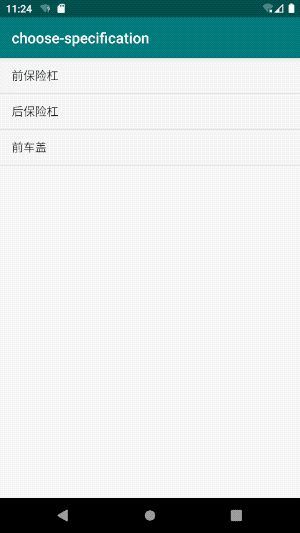

最近做了一版需求，和淘宝等商城App有些不一样，我们的商品单个因子就可以构成一个SKU，特地记录下来，给也有这种需求的App提供一个思路。
需求
名词解释：
- 规格：即SKU。
- 因子组：构成商品规格的一个维度，比如：“座位数”。
- 因子：因子组中具体的一个因子，比如说：“5座及以下”，“6座”，“7座及以上”。
灵活的因子
每一个因子组最多只能选择一个因子，来构成一个规格。
举个例子，假设钣金喷漆栏目里面有一个商品叫做 “前保险杠”，该商品有两个因子组：
- 漆类
- 普通漆
- 金属漆
- 钣金
- 普通钣金
- 复杂钣金
那么一共可以有8种规格：
- 普通漆
- 金属漆
- 普通钣金
- 复杂钣金
- 普通漆-普通钣金
- 普通漆-复杂钣金
- 金属漆-普通钣金
- 金属漆-复杂钣金
在实际情况中，在配置的时候可能会删除几种不需要的规格，比如说删除规格：“普通钣金” 、 “复杂钣金” 和 “金属漆-复杂钣金”。
对用户来说，只选一个 “漆类” 可以构成一个规格，也可以再搭配一个 “钣金” 构成另一种规格。只是选择 “金属漆” 的时候只能选择 “普通钣金”，不能选择 “复杂钣金”。
默认选中
在显示选择规格弹窗的时候，默认勾选一组可以构成一个规格的因子，尽量让构成选中的因子位于因子组中靠前的位置。
举个例子，假设后一个商品 “后保险杠” ，它也有 “漆类” 和 “钣金” 两个因子组，删除规格：“普通漆” 和 “普通漆-普通钣金”，可用规格如下：
- 金属漆
- 普通钣金
- 复杂钣金
- 普通漆-复杂钣金
- 金属漆-普通钣金
- 金属漆-复杂钣金
那么默认选中的就是 “普通漆-复杂钣金”。

后端返回数据
后台返回的一个商品的 JSON 数据结构如下：
1 | { |
factorGroupList是一个数组，里面的每一项都代表该商品的一个因子组，比如 “漆类”。在因子组中，list字段中是具体的因子，比如：“普通漆”、“金属漆”。specificationList是一个数组，里面的每一项都代表该商品的一种可用规格。originalPrice是原价，discountPrice是折扣价，如果折扣价等于原价，则没有折扣价，这里的单位为分。factorIdList是一个数组，里面的每一项代表着该规格所包含的因子id。
算法思路
因子一共有三种状态，所以在 FactorEntity 里创建了一个枚举类 Status，并新增一个 Status 类型的 status 字段来标识当前因子的状态。
1 | /** |
考虑到选择规格的逻辑其实和UI逻辑相对独立，所以专门新建了一个类 ChooseSpecificationCalculator 来处理选择规格的计算。
初始化
创建一个列表来装当前选中的因子，在选中和取消选中因子的时候对该列表进行增加或者删除因子的操作；
1 | // 选中因子列表 |
在 FactorEntity 中新增一个字段 specificationList 放所有包含该因子的规格，这样后续处理该因子的时候不必每次都遍历整个规格列表，只需要在初始化的时候对每一个因子遍历一次整个规格列表就好。
1 | product.factorGroupList.forEach { factorGroup -> |
对每一个因子组遍历一次，删除 specificationList 为空的因子，然后再遍历因子组列表，删除因子数为空的因子组，给剩余的每一个因子 status 赋值为 AVAILABLE。
1 | // 移除没有规格的因子 |
注意：这里之所以这么处理是因为需求要求删除无用的因子，如果你们的需求需要保留不可用因子的话，可以判断
specificationList是否为空，为空的status赋值为DISABLED，不为空的status赋值为AVAILABLE。
选中因子
只处理可用状态的因子，如果当前因子组存在选中因子，则将该因子变为可用状态，并移除已选中因子列表。然后将本次操作的因子状态置为选中状态，并加入已选中因子列表，然后更新所有因子的状态。
1 | fun selectedFactor(factor: FactorEntity) { |
取消选中因子
只处理处理选中状态的因子，将因子状态置为可用状态，并移除已选中因子列表，然后更新所有因子的状态。
1 | fun unselectedFactor(factor: FactorEntity) { |
更新因子状态
这里是算法的核心部分，这里拿判断因子 A 的状态为例。
使用已选中因子列表的因子 id 加上因子 A 的 id 构成一个集合 B，然后去遍历因子 A 的 specificationList 中的规格，看是否能找到一个规格满足集合 B 是其 factorIdList 的子集。
在这里，判断一个集合是另一个集合的子集采用的是 containsAll 方法，你如果需要考虑优化的话，可以参考淘宝团队的sku组合查询算法探索。
1 | val find = factor.specificationList.find { specification -> |
获得选中规格
如果选中因子列表为空，则返回 null。
拿出选中因子列表中的第一个因子，遍历该因子的 specificationList 字段中的每一个规格，如果发现有规格满足其字段 factorIdList 的数量等于 selectedFactorList 的数量 ，selectedFactorList 构成的因子 id 集合是其factorIdList 的子集，则该规格为当前因子构成的规格。
如果遍历完后还找不到对应的规格，则返回 null。
1 | fun getSelectedSpecification(): SpecificationEntity? { |
默认选中
一开始的时候，觉得这里是一个难点，但是等把上面的算法都实现后，回过头来考虑这个问题的时候，问题已经变得很简单了。
直接遍历因子组列表，从因子组中找到第一个可用的因子，选中它，如果能构成一个规格则结束，否则继续选中下一个因子组中的第一个可用因子，直到构成一个规格。
1 | run breaking@{ |
总结
这个算法和淘宝等商城App的选择规格算法虽然有一定的差异性，但是把删除的规格当作已经卖完的规格，再加上规格数量，那么就和淘宝等商城App的逻辑差不多了。
项目源码：choose-specification